Press
What you need to write about the game: the fact sheet, the summaries, screenshots and the logo.
Fact sheet
| Title | The Room That Waits (French: La Pièce qui attend) |
|---|---|
| Genre | Psychological horror, investigation, first person |
| Platform | Windows (Steam) |
| Languages | English, French |
| Release | November 13, 2026 |
| Price | $4.99 |
| Publisher | LOGIQ IA |
In one sentence
Twenty years after his little brother vanished during a game of hide-and-seek, a man returns to his childhood home, where light is scarce and the house remembers.
In one paragraph
The Room That Waits is a first-person psychological horror and investigation game. The power is out, the flashlight runs down, and every fuse you fit lights one room while leaving another in the dark. Notes, magnetic tapes, photographs and notebooks connect on an investigation wall. Nine chapters, sixteen puzzles, two endings.
Screenshots, logo, key art
Touch an image to open it full size. Everything is free to use to talk about the game.

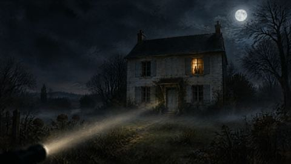
Key art (2688 × 1520)
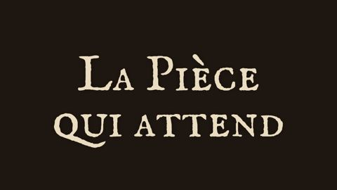
Logo, French (transparent PNG)
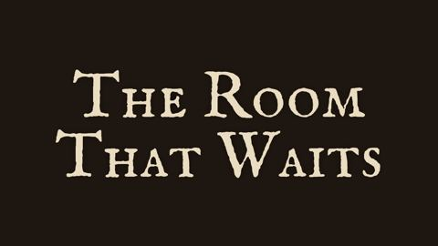
Logo, English (transparent PNG)
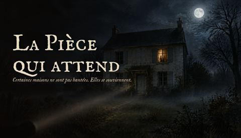
Titled visual, French
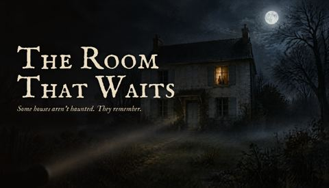
Titled visual, English
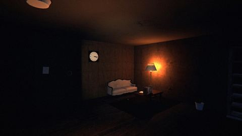
Screenshot (1920 × 1080)
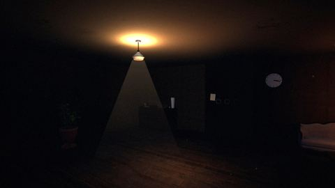
Screenshot (1920 × 1080)
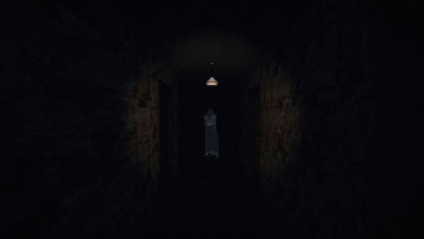
Screenshot (1920 × 1080)
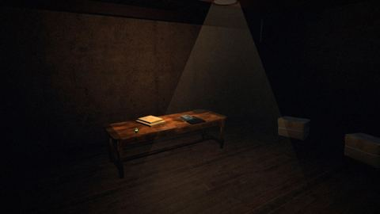
Screenshot (1920 × 1080)
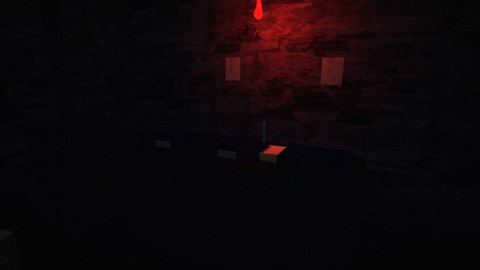
Screenshot (1920 × 1080)
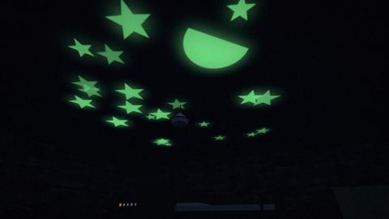
Screenshot (1920 × 1080)Contact
The press contact address will be published with the Steam page.